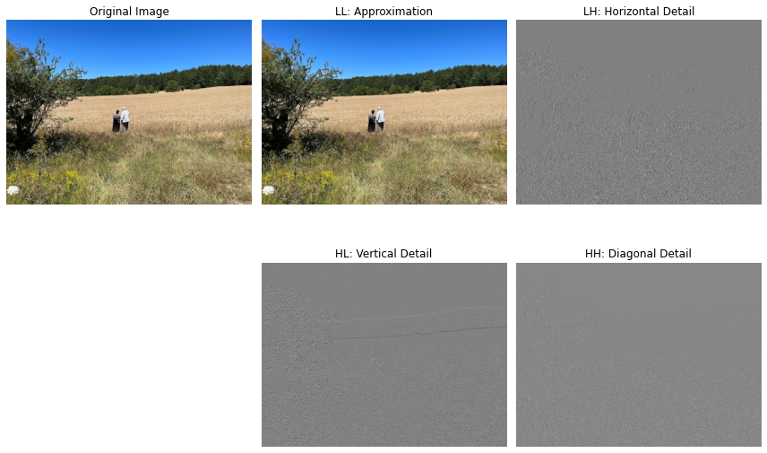
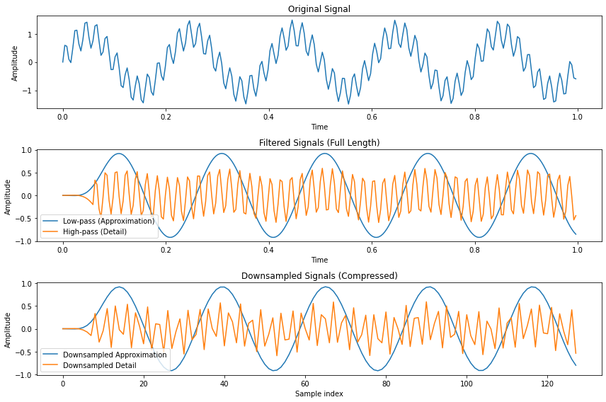
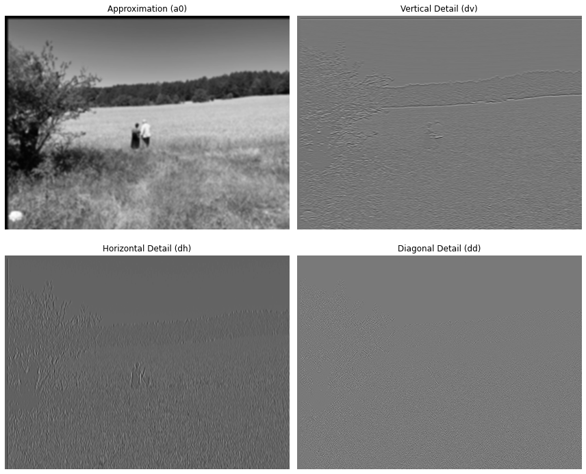
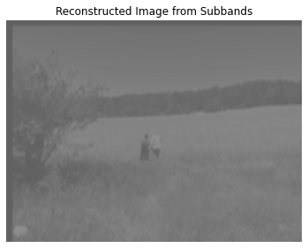

Chapter 8: Wavelet Transforms and Multiresolution Image Analysis#
This is the companion file for Chapter 8.
Video 8.1#
A useful explanation of vector spaces

Video 8.2#
A nice introduction to wavelets

Video 8.3#
Basic concepts of wavelet transforms

Video 8.4#
Discrete Wavelet Transform

Programming exercise 8.1:#
Run the following code to see the output of applying Haar Wavelet Transform.
import numpy as np
import matplotlib.pyplot as plt
import urllib.request
from PIL import Image
# Load the image
url = "https://raw.githubusercontent.com/itironal/466Companion/main/images/fatos_hocam_background.png"
original_img = np.array(Image.open(urllib.request.urlopen(url))) / 255
# Define 1D Haar transform
def haar_1d(x):
N = len(x)
output = np.zeros_like(x)
for i in range(0, N, 2):
output[i//2] = (x[i] + x[i+1]) / np.sqrt(2) # Approximation
output[N//2 + i//2] = (x[i] - x[i+1]) / np.sqrt(2) # Detail
return output
# 2D Haar transform (single level)
def haar_2d(channel):
# Apply 1D Haar to rows
temp = np.apply_along_axis(haar_1d, axis=1, arr=channel)
# Apply 1D Haar to columns
transformed = np.apply_along_axis(haar_1d, axis=0, arr=temp)
h, w = transformed.shape
h2, w2 = h // 2, w // 2
LL = transformed[:h2, :w2]
LH = transformed[:h2, w2:]
HL = transformed[h2:, :w2]
HH = transformed[h2:, w2:]
return LL, LH, HL, HH
# Apply Haar transform to each RGB channel
LL_r, LH_r, HL_r, HH_r = haar_2d(original_img[:, :, 0])
LL_g, LH_g, HL_g, HH_g = haar_2d(original_img[:, :, 1])
LL_b, LH_b, HL_b, HH_b = haar_2d(original_img[:, :, 2])
# Stack components to make visual RGB versions of each
def stack_rgb(r, g, b):
img = np.dstack((r, g, b))
# Normalize for visualization
img = img - img.min()
img = img / img.max()
return img
LL_img = stack_rgb(LL_r, LL_g, LL_b)
LH_img = stack_rgb(LH_r, LH_g, LH_b)
HL_img = stack_rgb(HL_r, HL_g, HL_b)
HH_img = stack_rgb(HH_r, HH_g, HH_b)
# Plot all components
plt.figure(figsize=(12, 8))
plt.subplot(2, 3, 1)
plt.imshow(original_img)
plt.title('Original Image')
plt.axis('off')
plt.subplot(2, 3, 2)
plt.imshow(LL_img)
plt.title('LL: Approximation')
plt.axis('off')
plt.subplot(2, 3, 3)
plt.imshow(LH_img)
plt.title('LH: Horizontal Detail')
plt.axis('off')
plt.subplot(2, 3, 5)
plt.imshow(HL_img)
plt.title('HL: Vertical Detail')
plt.axis('off')
plt.subplot(2, 3, 6)
plt.imshow(HH_img)
plt.title('HH: Diagonal Detail')
plt.axis('off')
plt.tight_layout()
plt.show()

Programming exercise 8.2:#
Run the following code to see the output of the two-band analysis filter bank applied to a one-dimensional signal
import numpy as np
import matplotlib.pyplot as plt
from scipy.signal import firwin, lfilter
def two_band_analysis(fx, cutoff, filter_order=31):
"""
Perform two-band analysis filter bank for 1D signal.
Parameters:
-----------
fx : 1D numpy array
Input signal.
cutoff : float
Normalized cutoff frequency (0 < cutoff < 0.5), relative to Nyquist.
filter_order : int
Order of FIR filters.
Returns:
--------
f0_down : 1D array
Approximation (low-pass) part, downsampled by 2.
f1_down : 1D array
Detail (high-pass) part, downsampled by 2.
f0_full : 1D array
Low-pass filtered signal (full length).
f1_full : 1D array
High-pass filtered signal (full length).
"""
# Step 1: Design FIR low-pass and high-pass filters
h0 = firwin(filter_order, cutoff, pass_zero='lowpass') # Low-pass
h1 = firwin(filter_order, cutoff, pass_zero='highpass') # High-pass
# Step 2: Filter the signal
f0_full = lfilter(h0, [1.0], fx) # Approximation
f1_full = lfilter(h1, [1.0], fx) # Detail
# Step 3: Downsample by 2
f0_down = f0_full[::2]
f1_down = f1_full[::2]
return f0_down, f1_down, f0_full, f1_full
# ---------------- Example Usage ----------------
# Create a sample 1D signal (e.g., sum of two sinusoids)
fs = 256 # Sampling frequency
t = np.arange(0, 1, 1/fs)
fx = np.sin(2*np.pi*5*t) + 0.5*np.sin(2*np.pi*50*t)
# Apply two-band analysis filter bank
cutoff = 0.1 # Normalized cutoff frequency (relative to Nyquist, 0.5)
f0_down, f1_down, f0_full, f1_full = two_band_analysis(fx, cutoff, filter_order=31)
# ---------------- Plot Results ----------------
plt.figure(figsize=(12, 8))
plt.subplot(3,1,1)
plt.plot(t, fx)
plt.title("Original Signal")
plt.xlabel("Time")
plt.ylabel("Amplitude")
plt.subplot(3,1,2)
plt.plot(t, f0_full, label='Low-pass (Approximation)')
plt.plot(t, f1_full, label='High-pass (Detail)')
plt.title("Filtered Signals (Full Length)")
plt.xlabel("Time")
plt.ylabel("Amplitude")
plt.legend()
plt.subplot(3,1,3)
plt.plot(f0_down, label='Downsampled Approximation')
plt.plot(f1_down, label='Downsampled Detail')
plt.title("Downsampled Signals (Compressed)")
plt.xlabel("Sample index")
plt.ylabel("Amplitude")
plt.legend()
plt.tight_layout()
plt.show()

Programming exercise 8.3:#
Run the following code to see the outputs of the two-band analysis filter bank applied to the image.
import urllib.request
import numpy as np
import matplotlib.pyplot as plt
from scipy.signal import firwin, lfilter
from PIL import Image
def two_band_2d_analysis(image, cutoff=0.1, filter_order=31):
"""
Two-band analysis filter bank for 2D images.
Parameters
----------
image : 2D numpy array
Grayscale input image.
cutoff : float
Normalized cutoff frequency (0 < cutoff < 0.5).
filter_order : int
Order of 1D FIR filters.
Returns
-------
a0 : 2D array
Approximation (low-pass) image.
dv : 2D array
Vertical detail image.
dh : 2D array
Horizontal detail image.
dd : 2D array
Diagonal detail image.
"""
# Step 1: Design 1D low-pass and high-pass filters
h0 = firwin(filter_order, cutoff, pass_zero='lowpass')
h1 = firwin(filter_order, cutoff, pass_zero='highpass')
# Step 2: Filter rows
f0_rows = lfilter(h0, [1.0], image, axis=1) # Low-pass rows
f1_rows = lfilter(h1, [1.0], image, axis=1) # High-pass rows
# Downsample rows by 2
f0_rows_down = f0_rows[:, ::2]
f1_rows_down = f1_rows[:, ::2]
# Step 3 & 4: Filter columns and downsample by 2
f0_cols = lfilter(h0, [1.0], f0_rows_down, axis=0)[::2, :] # Low-pass columns of LP rows
f1_cols = lfilter(h1, [1.0], f0_rows_down, axis=0)[::2, :] # High-pass columns of LP rows
f0_cols_h = lfilter(h0, [1.0], f1_rows_down, axis=0)[::2, :] # Low-pass columns of HP rows
f1_cols_h = lfilter(h1, [1.0], f1_rows_down, axis=0)[::2, :] # High-pass columns of HP rows
# Step 5: Merge with correct naming
a0 = f0_cols # Approximation
dv = f1_cols # Vertical detail (LP horizontal, HP vertical)
dh = f0_cols_h # Horizontal detail (HP horizontal, LP vertical)
dd = f1_cols_h # Diagonal detail (HP both directions)
return a0, dv, dh, dd
# ---------------- Load the image ----------------
url = "https://raw.githubusercontent.com/itironal/466Companion/main/images/fatos_hocam_background.png"
original_img = np.array(Image.open(urllib.request.urlopen(url)).convert('L')) / 255.0 # Grayscale
# ---------------- Apply 2D two-band analysis filter bank ----------------
a0, dv, dh, dd = two_band_2d_analysis(original_img, cutoff=0.1, filter_order=31)
# ---------------- Plot the results ----------------
plt.figure(figsize=(12, 10))
plt.subplot(2,2,1)
plt.imshow(a0, cmap='gray')
plt.title("Approximation (a0)")
plt.axis('off')
plt.subplot(2,2,2)
plt.imshow(dv, cmap='gray')
plt.title("Vertical Detail (dv)")
plt.axis('off')
plt.subplot(2,2,3)
plt.imshow(dh, cmap='gray')
plt.title("Horizontal Detail (dh)")
plt.axis('off')
plt.subplot(2,2,4)
plt.imshow(dd, cmap='gray')
plt.title("Diagonal Detail (dd)")
plt.axis('off')
plt.tight_layout()
plt.show()

Programming exercise 8.4:#
Run the following code to see the reconstructed image obtained from the approximation and detail subbands using the two-band 2D synthesis filter bank.
import numpy as np
from scipy.signal import firwin, lfilter
import matplotlib.pyplot as plt
def upsample_by_2(image):
"""
Upsample a 2D image by a factor of 2 along both axes.
"""
rows, cols = image.shape
upsampled = np.zeros((rows*2, cols*2))
upsampled[::2, ::2] = image
return upsampled
def two_band_2d_synthesis(a0, dv, dh, dd, cutoff=0.1, filter_order=31):
"""
Two-band synthesis filter bank for 2D images.
Parameters
----------
a0, dv, dh, dd : 2D arrays
Subband images from analysis filter bank.
cutoff : float
Normalized cutoff frequency for synthesis filters.
filter_order : int
FIR filter order.
Returns
-------
f_reconstructed : 2D array
Reconstructed image from subbands.
"""
# Step 1: Upsample all subband images by 2
a0_up = upsample_by_2(a0)
dv_up = upsample_by_2(dv)
dh_up = upsample_by_2(dh)
dd_up = upsample_by_2(dd)
# Step 2: Design synthesis filters
g0 = firwin(filter_order, cutoff, pass_zero='lowpass')
g1 = firwin(filter_order, cutoff, pass_zero='highpass')
# ---------------- Reconstruct columns ----------------
# Vertical direction:
# a0 + dh → low-pass vertically
# dv + dd → high-pass vertically
col_low = lfilter(g0, [1.0], a0_up, axis=0) + lfilter(g0, [1.0], dh_up, axis=0)
col_high = lfilter(g1, [1.0], dv_up, axis=0) + lfilter(g1, [1.0], dd_up, axis=0)
# ---------------- Reconstruct rows ----------------
# Horizontal direction:
f_reconstructed = lfilter(g0, [1.0], col_low, axis=1) + lfilter(g1, [1.0], col_high, axis=1)
return f_reconstructed
# ---------------- Example Usage ----------------
# Reconstruct the image from the subbands obtained earlier
f_rec = two_band_2d_synthesis(a0, dv, dh, dd, cutoff=0.1, filter_order=31)
# ---------------- Plot ----------------
plt.figure(figsize=(6,6))
plt.imshow(f_rec, cmap='gray')
plt.title("Reconstructed Image from Subbands")
plt.axis('off')
plt.show()
